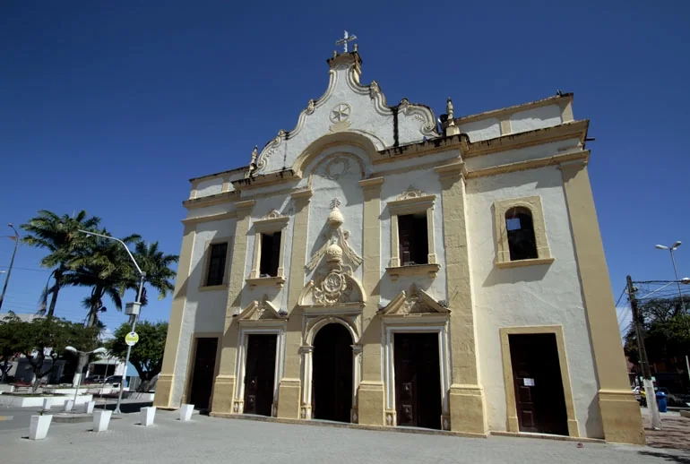
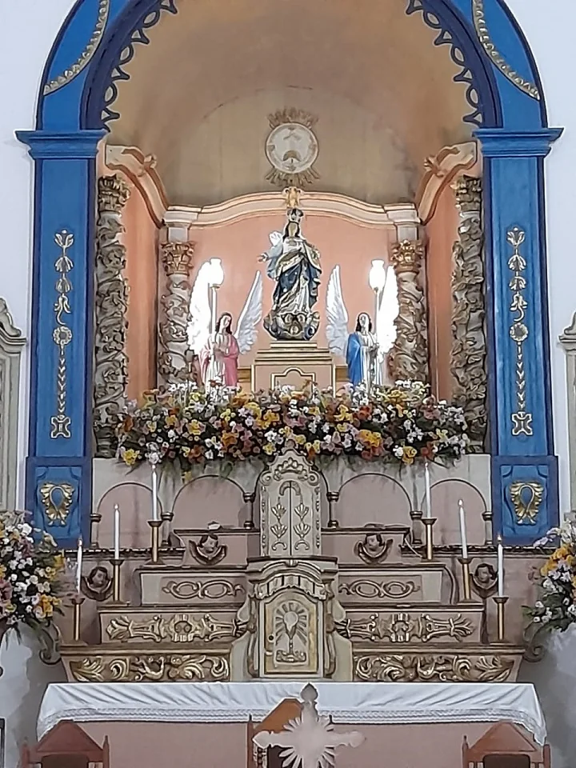
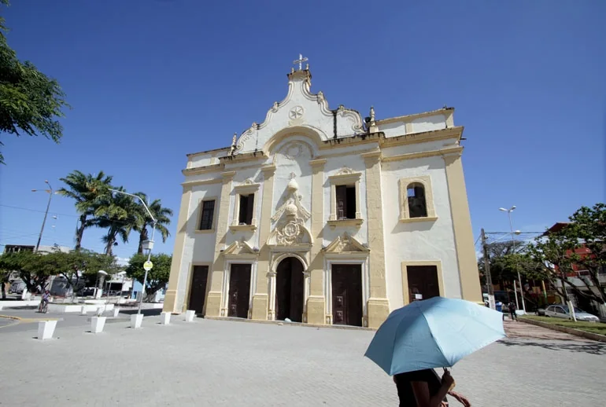
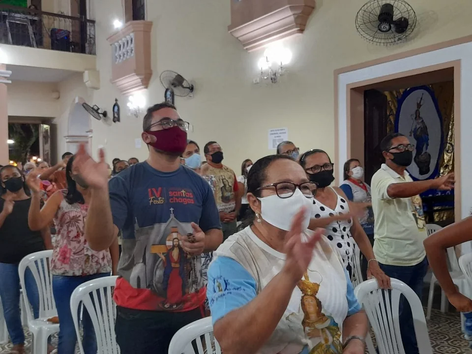
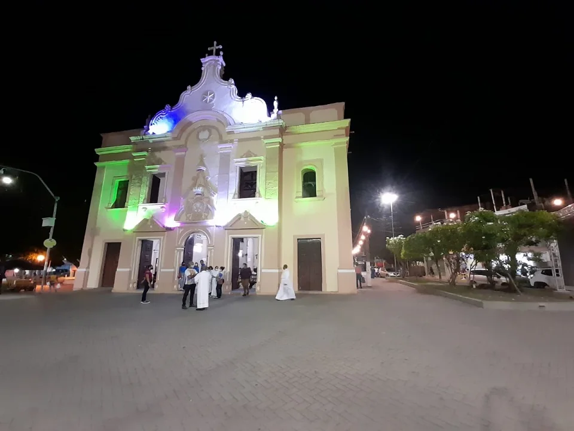

Documento
Lei, censo, inquérito, relatório oficial. É a prova mais forte: alguém registrou na época.
Ex.: a Lei 4.979 de 1963
Um bairro que já foi sede de município, campo de batalha e palco de festa.
Nem tudo que se conta sobre o Ó tem a mesma prova. Por isso, cada fato traz um selo dizendo de onde veio. Aprenda os quatro selos antes de começar. Eles vão aparecer o tempo todo.
Lei, censo, inquérito, relatório oficial. É a prova mais forte: alguém registrou na época.
Ex.: a Lei 4.979 de 1963Historiador, tese ou livro que estudou documentos. Boa prova, mas é a leitura de alguém.
Ex.: a Fundaj sobre a Usina SalgadoQuem viveu conta. É preciosa, porque ninguém escreveu, e é por isso que precisa ser guardada.
Ex.: idosos ouvidos pela UFPE em 2017História que todo mundo conta, mas que não tem prova. Faz parte da cultura, mas não é fato.
Ex.: a idade do baobáEm uma frase O nome vem de sete cantos de Natal que começam com a exclamação “Ó”.
O nome vem das sete Antífonas do Ó, cantadas de 17 a 23 de dezembro, no fim do Advento. Cada uma começa com “Ó”. Arquidiocese
É a devoção à Virgem grávida, Senhora da Expectação do Parto. A imagem mostra Maria com a mão sobre o ventre, esperando Jesus. Wikipédia

A devoção nasceu em Toledo, Espanha, no ano 656. No Brasil, começou em Olinda, com Duarte Coelho, e de lá chegou a Ipojuca. Megale e Etzel
“Nossa Senhora do Ó adorada na imagem de uma mulher prenhe”Gilberto Freyre · Casa-Grande & Senzala
Em uma frase Antes de ser bairro, o Ó era canavial, moenda e um rio por onde descia o açúcar.
O distrito já existia antes de 1608, com o nome Nossa Senhora do Ó de Ipojuca. IBGE
No começo do século XVII, Cosme Dias da Fonseca fundou o Engenho Salgado, dentro do Ó. Em 1636, ele moía com bois. inventário holandês
O rio era navegável até o meio do território. Por ele descia o açúcar. Leão, via TCC UFPE
Em uma frase Os holandeses chegaram pelo Engenho Salgado e, onze anos depois, o povo daqui se levantou contra eles.
Em 12 de março de 1634, os holandeses desembarcaram em terras do Engenho Salgado. Engenhos de PE
homens armados se levantaram com Amador de Araújo em 17 de julho de 1645. O povo incendiou o quartel holandês.
Seis dias depois, numa emboscada no Engenho Tabatinga, os holandeses foram derrotados. IBGE
Em 1641–42, um fiscal holandês reclamou que os engenhos de Ipojuca jogavam bagaço de cana nos rios. É um dos primeiros registros de poluição de rios na Mata pernambucana. relatório holandês
Em uma frase A Revolução Pernambucana perdeu sua última batalha bem aqui, e as ruas do Ó guardam isso no nome.
As tropas de Domingos José Martins, líder da Revolução Pernambucana, foram derrotadas entre Merepe e Ipojuca. R. C. Lins, Fundaj
Ele fugiu pelos mangues de Porto de Galinhas, se escondeu numa casa e foi preso. Foi fuzilado em Salvador no mesmo ano. relato de preso
O Ó guarda isso no mapa: Rua da Batalha e Travessa Batalha Domingos José Martins. nomes oficiais
Em 2011, Martins entrou no Livro dos Heróis da Pátria. E a bandeira de Pernambuco nasceu nessa mesma revolução. Lei federal
Em uma frase Por 50 anos, a sede do município trocou de lugar entre o Ó e São Miguel, lei após lei. Role e veja cada troca.
Por volta de 1889, o Ó tinha cerca de 250 casas. Era maior que São Miguel. Sebastião Galvão

O historiador Antônio Geraldo Leão chama o Ó de “Vila Rebelde”. Ele conta que, com tanta mudança, o lugar ganhou o apelido de “Vila das Trouxas”. um só autor
O aniversário de Ipojuca, 30 de março, é a data da lei que criou o município com sede no Ó. IBGE · Frei Milton
Em uma frase Dois anos depois da Abolição, um bumba meu boi juntou centenas de pessoas e acabou registrado num inquérito.
Em 1872, a paróquia sediada no Ó tinha 19.420 pessoas. Delas, 3.315 eram escravizadas. Isso é quase 1 em cada 6. tese Unicamp, 2014
Na véspera de São Pedro de 1890, a polícia autorizou um bumba meu boi em frente à igreja do Ó.
pessoas assistiram, entre elas ex-escravizados dos engenhos vizinhos.
Os nomes ficaram no inquérito: Cláudio Pergentino Ferreira do Monte, 40 anos, cozinheiro do Engenho Salgado; o capitão João Manoel; e um moço chamado Liberato. inquérito policial
Em uma frase O velho engenho virou usina, ganhou ferrovia e chaminé, e parou de moer depois de mais de um século. Role para avançar no tempo.
Em uma frase Em 1963, o Ó virou município de verdade. Seis meses e meio depois, deixou de ser. Role e conte os dias.
Quem foi o prefeito? Esse documento ainda não foi achado. Você sabe? Conte pra gente
Em uma frase Quatro idosos do Ó lembraram, sem combinar, das mesmas festas. Essa é a história que não está em nenhum papel.
Em 2017, uma pesquisa da UFPE ouviu quatro idosos do Ó, de 83 a 90 anos. Todos lembraram das mesmas festas. TCC UFPE · Deomaci J. Ramos
“Apoi meu filho, o Ó era bom demais!”Moradora de 85 anos · TCC UFPE, 2017


Hoje a padroeira é celebrada duas vezes por ano: no Advento e na primeira semana de fevereiro. Desde outubro de 2005, o Ó tem paróquia própria. Arquidiocese
A Arquidiocese data a igreja matriz do século XVI. Ela está em processo de tombamento pela Fundarpe. Arquidiocese, 2021
A igreja que viu tudo isso continua de pé, no centro do Ó. Por dentro e por fora, em fotos reais. Toque numa foto para ampliar.
A pesquisa virou série em vídeo. Episódios curtos, gravados no Ó, com quem guarda essa memória. Arraste para o lado.
Como jogar Para cada frase, escolha de onde ela vem. Lembra dos quatro selos?
Em uma frase Os nomes das ruas guardam a história do Ó. Toque numa placa para virar.
Em uma frase Toda a história acima tem endereço. E ainda há buracos que você pode ajudar a preencher.
Ajude a completar esta história. Ainda faltam documentos sobre: